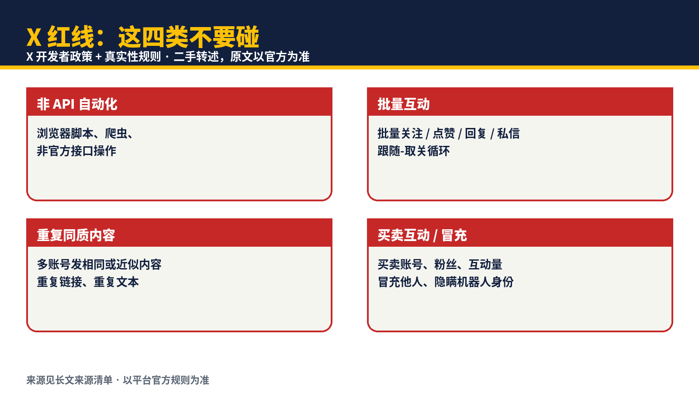
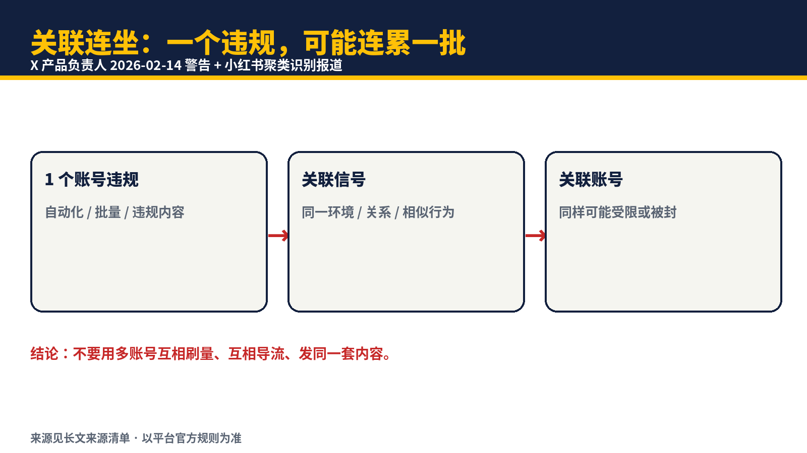
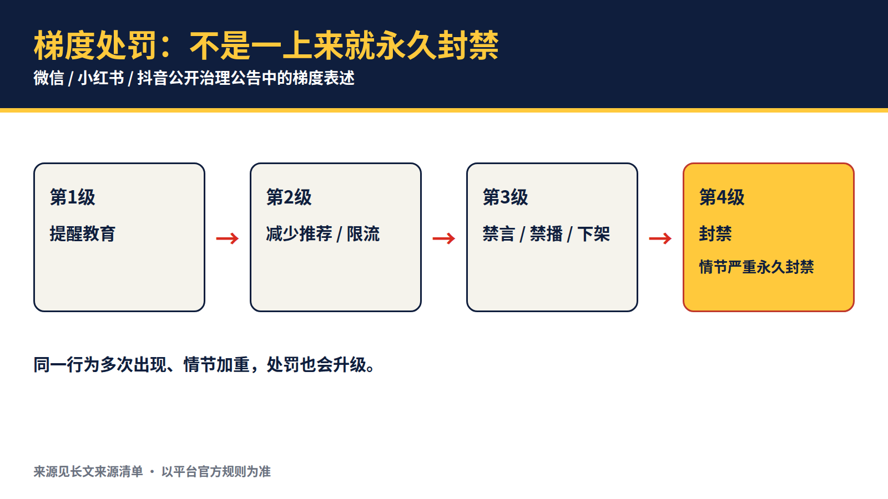
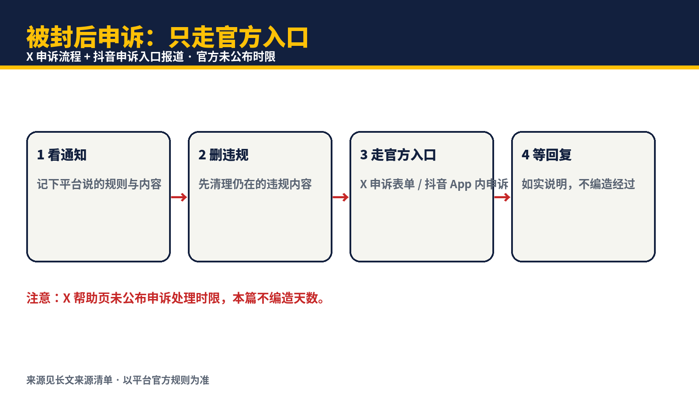
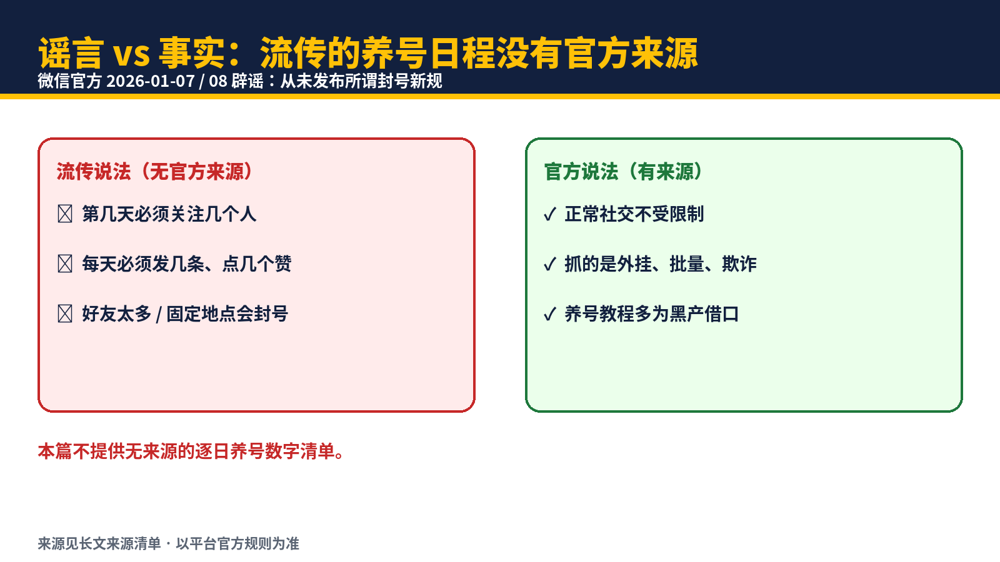

Skill（可直接用）：防封号指南 Skill · 只做有来源的事 →
关注 X：@LaomaiAI · 公众号：AI包工头老麦 · 长文 + Skill，链接在 X 主页和公众号里
2026-10-14 · AI包工头老麦
只写有来源的规则。没有来源的，本篇不写、不编、不猜。凡是本篇没写清时限、数量、通过率的地方，都是因为没找到官方来源，不是不小心漏了。不确定的，一律以平台官方规则为准。

封号最常见的触发点，可以归成四类：自动化与非官方接口操作、批量互动、同质化重复内容、冒充与买卖互动量。再加一条容易被忽略的：关联连坐——一个账号违规，关联账号也可能一起受限。
另一句结论同样重要：网上流传的很多“新号前几天必须做什么、每天发几条”数字清单，本篇没有找到官方来源。微信官方在 2026 年 1 月明确辟谣：从未发布所谓“封号新规”，正常社交不受限制，流传的“养号教程”多为黑产为违规行为找借口。［来源 10］所以本篇不提供逐日养号数字清单，不编造发帖频率安全值。
保号的打法只有一句：人手动操作，慢一点，内容差异化，自动化只走官方接口，申诉只走官方入口。
AI包工头老麦，任务交给我包你满意。
写了（每条有来源）：
没写（因为没找到可靠来源，如实列出缺口）：

X 开发者政策要求：用 X API 与开发者产品制造垃圾信息或从事平台操纵，属于禁止行为；执行写入操作（发帖、关注、发私信）的服务必须遵守自动化规则。［来源 1］
开发者指南列出的禁止行为包括：垃圾信息与操纵、未经请求的群发、欺骗性机器人、买卖互动量、滥用限流、非 API 自动化、账号农场、监控、无授权 AI 训练、过度分发等；其中明确写明，非 API 自动化（爬虫、浏览器自动化）会导致永久停用。［来源 2］
2026 年 2 月 14 日，X 产品负责人公开表示：平台正在加强自动化与垃圾信息检测；如果不是真人在点屏幕，相关账号以及所有关联账号都可能被停用，即便只是实验；自动化爬取会被抓到；如需自动化，应使用官方 API。［来源 3］
翻译成人话：
据对 X 真实性规则的二手梳理，禁止行为包括：跟随后取关循环（为涨粉而大批量关注再取关）、批量 / 激进 / 未经请求的回复、提及与私信、无评论地反复发链接、反复发布相同或近似文本、买卖账号与互动量。严重违规可在首次发现时即永久停用；孤立的初犯可能只是删帖或临时锁定。［来源 5，二手梳理，原文以官方规则为准］
多账号方面：一份带立场的研究笔记（为“多账号 + 自动化 fleet”辩护，非独立研究）引用 2024 年 11 月版政策称，当时政策曾写明可为不同、非重复目的创建或运营最多 10 个账号，关键条件是“非重复”——每个账号要有自己的身份、目的与内容。［来源 7，带立场的研究笔记，未验证是否为当前版，使用前请以官方最新规则为准］
不要做的事：
X 服务条款（2026-04-10 版，原文以 legal.x.com 为准）写明：如果平台有合理理由认为账号违反了条款或规则政策、带来风险、涉及违法行为等，可暂停或终止账号；认为账号被错误终止的，可按帮助中心步骤申诉。［来源 4］
据对 X 帮助页的二手梳理，申诉顺序是：登录被停用账号 → 打开新浏览器标签页 → 提交申诉；帮助页未公布审核时限。在提交申诉之前，先看登录时是否有手机 / 邮箱验证提示：如有，先完成验证，可直接解封，无需申诉；无验证提示、且认为是误判时，再走帮助中心申诉表单。［来源 6］ 永久停用是最严重的处置，账号会被移出可见范围，平台会告知触发的政策与内容；若申诉维持原判，答复会写明违反的政策。［来源 6，二手梳理，原文以官方规则为准］

据报道归纳，抖音封号的常见原因包括：违反社区规范发布不良内容、虚假宣传与诱导营销、通过第三方工具批量刷粉刷赞刷评论刷转发、短时间内频繁更换设备或网络环境或高频重复操作、侵犯他人知识产权、账号安全异常。［来源 8，报道归纳，非官方全文］
其中两点对新号尤其重要：
公开治理案例：抖音黑板报公告（经 2025 年 12 月 25 日报道转述）称，近一个月清理涉未成年人违规内容 20.2 万条，对超 8000 个账号处以清理违规增长粉丝、限制商业变现、禁言、封禁等不同梯度处罚；其中 AI 生成未成年人低俗擦边、卖惨、邪典动画三类，分别有 39 个、180 个、391 个账号被全面禁言，另有 610 个相关违规账号被全面禁言。［来源 9，转述抖音黑板报公告］
抖音申诉入口据报道为抖音 App 内账号封禁申诉入口（以 App 内实际入口为准），需如实填写身份信息、说明情况并附相关证明；申诉前应清理违规历史内容。［来源 8，报道口径，以 App 内实际入口为准］
微信官方辟谣（2026 年 1 月 7 日至 8 日，经报道转述）是本篇最重要的一条来源：微信官方从未发布任何所谓“封号新规”；“好友太多会被封”“地址不变会被封”等说法不实；正常社交行为不会受到限制；真正触发安全机制的，是黑产账号的违规行为，例如使用外挂批量添加好友、高频次群发欺诈信息、发布同质化违禁内容；市面上流传的所谓“养号教程”，是黑产把自身异常操作模式伪装成平台规则向外散布。［来源 10］
微信珊瑚安全公告（经 2025 年 10 月 20 日报道转述）：针对利用方言、外语传播不良信息的专项治理，累计处置违规短视频内容 18453 条，对 12 个违规账号采取封号、禁言、限流等处置。［来源 11，转述］
微信视频号直播治理公告（经 2025 年 7 月 25 日报道转述）：对团播低俗违规行为，处罚手段包括提醒教育、减少推荐、中断直播、禁播、清空或扣除信用分，情节严重者永久封禁账号。［来源 12，转述］
对公众号创作者的落点：不要信“养号日程”类传言；不要用外挂批量加好友、群发；不要发同质化违禁内容；内容以平台公开的《微信个人账号使用规范》等规则为准。［来源 10］
小红书首份《社区金融生态公约》于 2026 年 9 月 15 日发布（经多家报道转述）。公约明确禁止八类金融内容，转述来源中具名的有七项：恶意唱衰、非法荐股、非法金融活动、伪造权威背书、承诺“保本保息”、编造虚假投资人设、变相导流站外；第 8 项未在转述来源中具名，本篇不补编；同时要求做好风险提示，使用 AI 生成内容须标注。金融营销须先依法持牌、再通过平台专业资质认证，冒名、挂靠、租买资质一律禁止。违规处置为限流、下架乃至封号等梯度处置。［来源 13，转述］
同期官方披露的处置量：自年初启动金融生态专项治理以来，近半年处置违规笔记超过 101 万篇、违规账号 15.7 万余个、违规评论超过 477 万个。［来源 13，转述］
多账号与矩阵方面（经 2026 年 9 月 28 日报道转述）：小红书通过 WiFi、IP、群聊、账号关系与行为相似度进行聚类识别；抖音严禁恶意注册、买卖、租用、操控多个账号，以规避资质审核、逃避处罚、扩散违规内容，也不得借助矩阵账号仿冒资质、虚假宣传、违规营销、引流站外、批量发布同质化财经违规内容；平台将结合账号关联、内容相似度、发布行为、导流路径与违规记录综合判定，对涉事账号及主体实施联动处罚。［来源 14，转述］
同一报道还提到即将施行的金融营销管理办法要求：第三方平台应加强资质核验并在主页展示认证材料，对不符合规定的及时暂停发布或关闭账号；发现非法金融活动应立即制止并移交线索。［来源 14，转述，条文以正式发布文本为准］

| 红线 | 来源 |
|---|---|
| 非 API 自动化：爬虫、浏览器脚本、非官方接口操作 | 来源 2、3 |
| 自动化回复 / 私信未取得明确同意，或不尊重退订 | 来源 1 |
| 批量关注 / 点赞 / 回复 / 私信；跟随-取关循环 | 来源 5 |
| 多账号发相同或近似内容；多账号互相刷量 | 来源 1、5 |
| 买卖账号、粉丝、点赞、转发，或付费代刷 | 来源 5 |
| 冒充他人、隐瞒机器人身份 | 来源 1、2 |
| 刷量、搬运未授权内容、虚假宣传 | 来源 8 |
| 外挂批量加好友、高频群发欺诈、同质化违禁内容 | 来源 10 |
| 金融内容：非法荐股、伪造资质、保本保息承诺、虚假人设、违规导流 | 来源 13 |
| 矩阵账号规避审核、逃避处罚、扩散违规内容 | 来源 14 |

本节不提供“第 1 天做几件事、第 7 天做几件事”的数字清单，因为没找到官方来源。以下每条都对应上文来源，不是本篇发明的数值：
□ 没有用脚本、爬虫、浏览器自动化代替 API？［来源 2、3］
□ 没有批量关注 / 点赞 / 回复 / 私信，没有跟随-取关循环？［来源 5］
□ 没有多账号发相同或近似内容？［来源 1、5］
□ 没有买粉买赞买转发，没有付费代刷？［来源 5］
□ 机器人身份已在简介中说明，没有冒充他人？［来源 1］
□ 没有搬运未授权内容，没有虚假宣传？［来源 8］
□ 没有用外挂批量加好友、群发欺诈信息？［来源 10］
□ 金融内容：有资质、有认证、有风险提示，AI 生成已标注？［来源 13］
□ 账号之间没有互相刷量、互相导流、发同一套内容？［来源 1、14］
□ 申诉只走官方入口，材料如实填写？［来源 4、8］10 项全打勾再发布。有一项打不上，先停手，不要发。
操作清单 + 可复制提示词 + 检查项 + 常见坑 + 失败回退，都在 Skill 里：防封号指南 Skill →
关注 X： https://x.com/LaomaiAI · 公众号： AI包工头老麦
来源清单（链接 + 日期，检索于 2026-10-14）：
1. X 开发者政策（X Developer Policy，GitHub 官方文档镜像）：github.com/xdevplatform/docs
2. X 开发者指南（X Developer Guidelines，GitHub 官方文档镜像，含非 API 自动化永久停用表述）：github.com/xdevplatform/docs
3. X 产品负责人 2026-02-14 自动化检测警告（NewsBytes 报道，本次未逐字核对发言原文，以报道为准）：NewsBytes ；同题 Livemint 报道：Livemint
4. X 服务条款 2026-04-10 版（原文以 legal.x.com 为准，纯文字引用，不附第三方镜像链接）
5. X 真实性规则二手梳理（Circleboom，梳理 X 帮助页）：Circleboom
6. X 停用与申诉流程二手梳理（Circleboom，梳理 X 帮助页，含“未公布时限”）：Circleboom
7. 多账号研究梳理（带立场的研究笔记：为“多账号 + 自动化 fleet”辩护，非独立研究；引用 2024-11 版政策，未验证当前版）：GitHub 研究笔记
8. 抖音封号原因与申诉入口报道归纳（新浪）：新浪
9. 抖音黑板报涉未成年人治理公告（经新浪财经 2025-12-25 报道转述）：新浪财经
10. 微信官方辟谣“封号新规”（经新浪财经 2026-01-07 / 2026-01-08 报道转述）：新浪财经 01-07 ；新浪财经 01-08
11. 微信珊瑚安全方言外语治理公告（经新浪财经 2025-10-20 报道转述）：新浪财经
12. 微信视频号团播低俗治理公告（经新浪财经 2025-07-25 报道转述）：新浪财经 ；澎湃同题：澎湃
13. 小红书《社区金融生态公约》2026-09-15 发布（经报道转述）：新浪财经 ；新浪财经 ；网易
14. 跨平台矩阵与聚类识别、金融 930 新规报道（新浪财经 2026-09-28）：新浪财经
本篇素材说明：插图为本篇新制代码图（5 张），未使用无来源的案例截图；未编造任何封号经历；所有数字均来自上方来源清单并标注转述属性；凡来源为二手梳理或转述的，均已标注，未冒充官方原文。help.x.com 官方页本次直接拉取被阻断，未能逐字核对官方原文，独立审核时请以官方最新页面为准复核来源 5、6。